Softbank
Softbank reviving Ola-Uber India merger talks?
13 HOURS AGO MUMBAI: Taxi-hailing services Ola and Uber have once again revived talks to merge their businesses
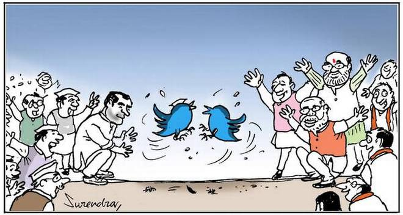
here, in a deal being brokered by Japanese investment firm Softbank that is an investor in both the companies.
Source in the know of the development has confirmed that senior executives from both companies have met several
The talks indicate that homegrown Ola will take over Uber India.
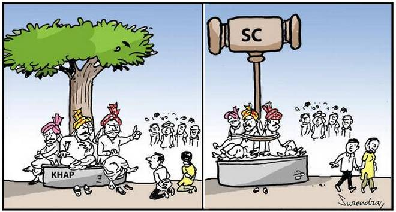
However, the blueprint of the deal is yet to be worked out and could take several months, according to the source. Softbank is the largest investor in both the companies, and is facilitating these talks, the source added.
When asked about the development, an Ola spokesperson told PTI, "Ola is always actively looking for opportunities
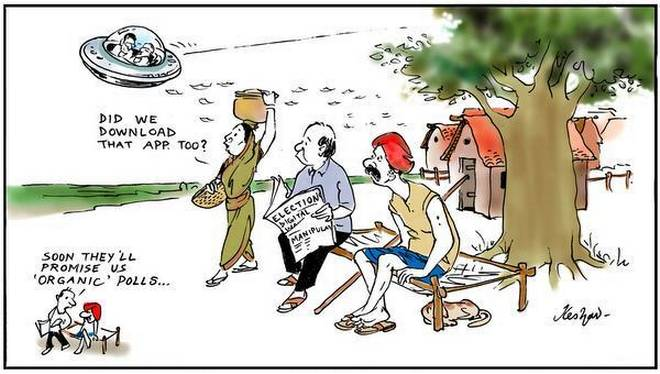
to expand its footprint. Softbank and all other investors are committed to realising this ambition."
It can be noted, that talks about the development have heightened a day after Uber announced its exit from Southeast Asia, after selling its local unit to rival company Grab.
No extension of time for linking Aadhaar to welfare schemes: Supreme Court
1 DAY AGOThe top court had on March 13 extended indefinitely the March 31 deadline for linking bank accounts and mobile phone numbers with Aadhaar.
However, it had allowed the government and its agencies to link the 12-digit national biometric identifier number of the beneficiaries for transfer of benefits of schemes funded from this fund.
A plea, seeking extension of time beyond March 31 for linking Aadhaar with welfare schemes, was made today before a five-judge constitution bench headed by Chief Justice Dipak Misra after Ajay Bhushan Pandey, CEO of Unique Identification Authority of India (UIDAI), concluded his PowerPoint presentation (PPT), claiming it would take "billions of years" to decrypt the saved data, including the biometrics.
Senior advocate K V Viswanath, appearing for a petitioner opposed to the Aadhaar scheme, took a cue from the PPT in which the UIDAI CEO said that the success rate of Aadhaar authentication in government systems was 88 per cent.
However, it had allowed the government and its agencies to link the 12-digit national biometric identifier number of the beneficiaries for transfer of benefits of schemes funded from this fund.
A plea, seeking extension of time beyond March 31 for linking Aadhaar with welfare schemes, was made today before a five-judge constitution bench headed by Chief Justice Dipak Misra after Ajay Bhushan Pandey, CEO of Unique Identification Authority of India (UIDAI), concluded his PowerPoint presentation (PPT), claiming it would take "billions of years" to decrypt the saved data, including the biometrics.
Senior advocate K V Viswanath, appearing for a petitioner opposed to the Aadhaar scheme, took a cue from the PPT in which the UIDAI CEO said that the success rate of Aadhaar authentication in government systems was 88 per cent.
connecting them with their customers, suppliers, employees and revenue departments, it said.
"The system will provide rich analytics, dashboards and reports enabling focus on metrics that matter like cash forecasting, daily sales outstanding, credit exposures and so on," said Bank of Baroda.
Get latest news & live updates on the go on your pc with News App. Download The Times of India news app for your device. Read more Business news in English and other languages.
today launched 'Baroda DigiNext', a product for digitising cash management of corporate and government customers, the public sector lender said in a release.
Baroda DigiNext aims at bringing the benefits of the new digital landscape to its corporate and government customers by seamlessly connecting them with their customers, suppliers, employees and revenue departments, it said.
|
Times AI Hub's Conclave Captures Predictive Policing Techniques
Industry experts discuss the ways and means Artificial Intelligence is being used in different industries successfully at Times AI Hub recent event.
March 27, 2018, NOIDA : After successfully hosting Artificial Intelligence-focussed events at the prestigious IIT Delhi and IIIT Okhla, Times AI Hub recently organised it's third Artificial Intelligence Conclave at IISc Bengaluru.
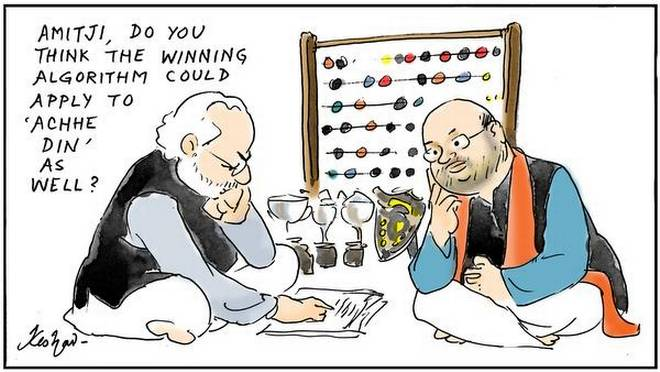
The one-day conclave, which was supported by ASSOCHAM and NASSCOM Center of Excellence, was powered by NVIDIA. Times AI Hub is an Artificial Intelligence (AI) focussed virtual platform that connects the industry thinkers, practitioners, companies and influencers, and keeps hosting events to formalise dialogues in the AI domain
With this conclave, the recently formed AI Hub's Bengaluru chapter intended to bring together all industry leaders on a common platform to share knowledge and interact. The conclave witnessed exhaustive discussions on practical implications of Artificial Intelligence (AI) & Machine Learning for enterprises and organisations, and the solutions which enhance business productivity.
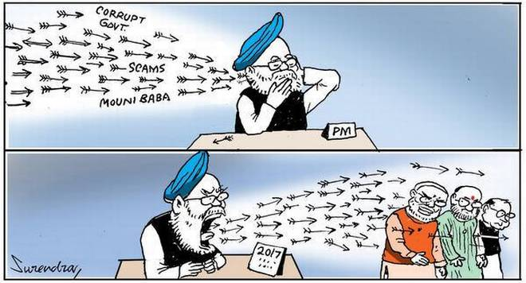
With a gathering of about 250+ participants from companies like, Rolls Royce, Mercedes Benz, Bangalore International Airport, IBM, NPCI, Deloitte Consulting, Genpact, Columbia Asia, and HCL Technologies, this event was a huge success. Some of the eminent speakers included Sundara Nagalingam, Head of Deep Learning at NVIDIA India who shared his learnings on the topic AI in the physical world: Practical applications of Machine Learning. Other speakers included Dr. Pratibha Moogi, Part Head, Media Analytics & Recognition at Samsung Electronics, Dr. Manish Gupta, Director Machine Learning & Data Science - American Express, Dhaval Doshi, Founder - Smarthome NX, Sandeep Chanda, AVP Technology at Neudesic, Dr. Praphul Chandra, Founder Koinearth, Amit Singh, Director IoT at Cognizant Technology Solutions and Avi Patchava, VP, Data Strategy at Inmobi.
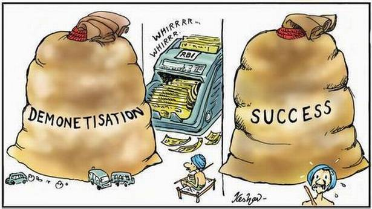
The event's keynote was delivered by Ramit Sharma, Inspector General Police of Allahabad Range, who presented fascinating insights on Predictive Analysis, Crowd Management and Service Delivery using AI: Current Trends and Future Prospects. Incidentally, he is instrumental in developing an AI-based software known as agent-based modelling. With this, the Allahabad Range Police manage crowd behaviour more strategically, and this came in handy during the recent Kumbh Mela.
The enthralling talk sessions upraised the audience about how AI and Machine Learning technologies are fast turning into tools for predictive policing. The panel discussion led by the moderator Dhaval Doshi was centered around the topic Artificial Intelligence 2018 & Beyond. It decoded the key reasons on how Artificial Intelligence, Internet of Things & Machine Learning are becoming integral to every industry and business. The panellists also presented case studies based on their experiences in their respective industry verticals, which was highly applauded by the audience.
Expressing his happiness at the event turnout, Ramathreya Krishnamurthi, Business Head, TimesJobs & TechGig, said that new technologies will be an indispensable part of future work sphere and its right time to adopt this learning curve. "The future of work is tech-driven. At TimesJobs, we have been cautiously leading this dialogues through the Times AI Hub mantle. It's heartening to see so many leading companies, thinkers and leaders discuss this avenue passionately. The case studies presented here were phenomenal and these were my favourite part of the discussion," he said.
Times AI Hub is an initiative by TimesJobs that aims to bring forth many such events during the year. Revolving around AI, Blockchain & Cybersecurity , the events shall be organised at tech-driven cities like Pune & Hyderabad.
|
SBI increases rates on fixed deposits above two years
NEW DELHI: State Bank of India (SBI) has increased its interest rates on fixed deposits across various maturities with effect from Wednesday. The country's largest lender has hiked the interest rates for tenures starting from two years to 10 years which will now earn 6.6 per cent and 6.75 per cent rates respectively.
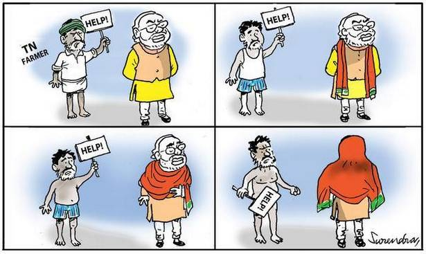
This comes just a few days before Reserve Bank of India's (RBI) monetary policy announcement that will decide on key policy rate on April 5. SBI accounts for more than a fifth of the country's banking assets.
SBI had earlier hiked interest rates on fixed deposits in January and February. The lender had also hiked its marginal cost of funds lending rate (MCLR) across maturities in March.
Below are the revised interest rates on different tenures:
For term deposits below Rs 1 crore:
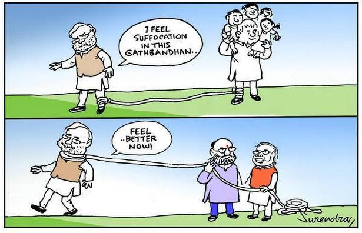
1 new
For bulk term deposits (Rs 1 crore to Rs 10 crore):
2 new
Recommended By Colombia
For bulk deposits above Rs 10 crore:
3 new
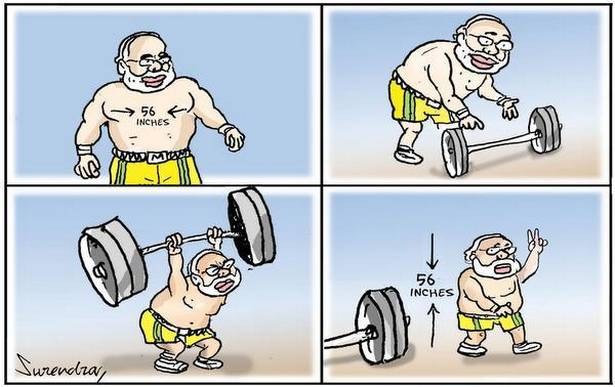
Get latest news & live updates on the go on your pc with News App. Download The Times of India news app for your device. Read more Business news in English and other languages.
RELATED
Educational Qualification: Graduation from any recognised university/institution
Candidates who have applied for the examination can check and download their admit card from the SBI Clerk PET website - http://ibps.sifyitest.com/sbijacsjan18/clpeta_feb18/login.php?appid=c82e11668812847c1a9829e28f778034
Candidates are advised to download their SBI Clerk PET 2018 Admit Card from the official website https://www.sbi.co.in/careers/.
In case you have also applied for the SBI Clerk PET 2018 examination, you can follow the steps given below to check and download your admit card.
Steps to download the SBI Clerk PET 2018 Admit Card
1) Go to the official website official website https://www.sbi.co.in/careers
2) On the page, at the top right, you will find "Recruitment of Junior associates (customer support & Sales) in State Bank of India Advertisement NO CRPD/CR/2017-18/10", click on Download.
3) It will take you to login page http://ibps.sifyitest.com/sbijacsjan18/clpeta_feb18/login.php?appid=c82e11668812847c1a9829e28f778034
Recommended By Colombia
4) At login page, enter the Registration No and Password/ DOB at the required places to download the Call Letter. And after entering the captcha code, click on the login link
5) Your SBI Clerk PET 2018 Admit Card will be displayed on the screen. Carefully check all your details such as name, paper, date of birth, gender, test centre name, city, state, code of eligibility and
category on your SBI Clerk PET 2018 admit card.
6) You can download it and take a printout for future reference.
Click here for more Education News
Get latest news & live updates on the go on your pc with News App. Download The Times of India news app for your device. Read more Home news in English and other languages.
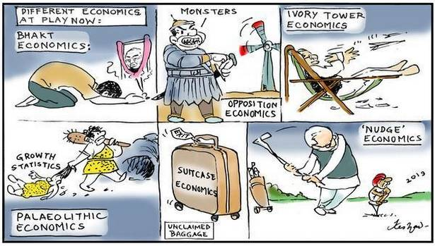
NEW DELHI: Theleme Master Fund, a UK-based hedge fund, on Wednesday bought Bank of Baroda shares worth Rs 1,038 crore through an open market transaction.
According to the bulk deal data available with BSE, Theleme Master Fund Ltd purchased 7,31,50,000 shares or 3.17 per cent stake in the state-owned lender.
Among the sellers of the shares was Merrill Lynch Markets Singapore Pte Ltd, which disposed of 7,31,26,423 scrips for a total amount of Rs 1,038.03 crore.
Bank of Baroda stock ended the day on BSE at Rs 142.20 apiece, down 1.08 per cent from the previous close.
"The system will provide rich analytics, dashboards and reports enabling focus on metrics that matter like cash forecasting, daily sales outstanding, credit exposures and so on," said Bank of Baroda.
Get latest news & live updates on the go on your pc with News App. Download The Times of India news app for your device. Read more Business news in English and other languages.
today launched 'Baroda DigiNext', a product for digitising cash management of corporate and government customers, the public sector lender said in a release.
Baroda DigiNext aims at bringing the benefits of the new digital landscape to its corporate and government customers by seamlessly connecting them with their customers, suppliers, employees and revenue departments, it said.
|
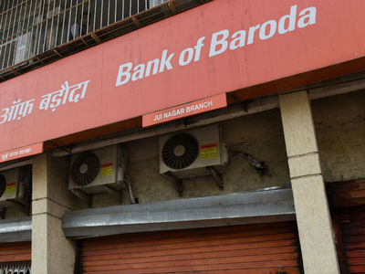
Bank of Baroda shares
worth Rs 1,038 crore
Whistleblower says the company ‘worked extensively’ in India
Cambridge Analytica worked “extensively” in India, and operated a system of “modern-day colonialism”, globally undermining democratic processes across the world, as Christopher Wylie, the whistleblower who blew the lid on the firm’s gathering of data from Facebook told a British parliamentary committee on Tuesday.
He told MPs that the company had worked on “all kinds of projects” in India, including regionally, and believed “their client was the Congress,” he said, adding that he believed he had documentation he could provide relating to work in India. “They do have offices there, they do have staff,” he said. “I don’t remember a national project,” he said on Tuesday. “I mean India is so big, one state could be as big as Britain,” he said in response to Labour MP Paul Farrelly.
ALSO READ
Cambridge Analytica controversy: Urgent need for data protection laws, say experts
During his testimony he built a picture of the work carried out by Cambridge Analytica, and AggregateIQ (AIQ), a Canada-based company that had played a role in political processes across the world. They included particularly concerning instances of the role AIQ had played in disseminating violent video content by social media in Nigeria, as part of work there. Cambridge Analytica was an example of “modern day colonialism,” he suggested at one point.
“This is a company that has gone around the world and undermined the democratic process,” he said. “You have a wealthy company from a developed nation going into an economy or democracy still struggling to get its feet on the ground and taking advantage of that.”
ALSO READ
U.S. regulator probes Facebook
Among allegations made by Mr. Wylie was the suggestion that Vote Leave, one of the main campaigns that pushed for Brexit, may have broken Britain’s electoral rules that went beyond existing concerns around spending infractions, over the role that AIQ played in the campaign.
“This is not about leave or remain. It’s about the integrity of the democratic process,” said Mr. Wylie, a former Cambridge Analytica employee, who earlier this month, revealed details of how the firm had inappropriately gathered Facebook data used to target voters in the US, dating back to 2014, using an app developed by Cambridge psychologist Aleksandr Kogan.
Mr. Wylie insisted, that despite his “pink hair and nose ring” he was one of the “rare breeds of progressive Eurosceptics.”
Internal entity
AIQ has long maintained its independence from Cambridge Analytica and the SCL Group — but Mr. Wylie insisted that Aggregate IQ, while not owned by Cambridge Analytica, held the licence to the intellectual property that formed the basis of Cambridge Analytica’s software, and effectively operated as an “internal entity” that were kept at arm’s length for purposes of political expediency.
ALSO READ
UK MPs demand Zuckerberg testify
He also described as “categorically untrue” claims that Cambridge Analytica had never used Facebook data, citing the app, which had been the “foundational dataset of the company”. Past evidence given by suspended Cambridge Analytica head Alexander Nix to the committee had been “dishonest” and “misleading”, he said.
During a lengthy session in which MPs from across the political spectrum on the culture, media and sport (DCMS) committee quizzed Mr. Wylie, he provided a snapshot of the work carried out by the firms, currently in the spotlight, highlighting how data captured enabled them to build up psychological profiles of individuals who would be particularly susceptible to forms of certain tactics.
During the Brexit referendum campaign, for example, rather than focussing on everyone in the country, AIQ focussed on 5 to 7 million people who were their “core” universe, blasting them with adverts in a “calculated way”. Between 5 and 7% of cases it resulted in the targeted individuals carrying out a “substantive action” for the leave campaign — highlighting the important role that AIQ’s work played in the campaign and the final result.
ALSO READ
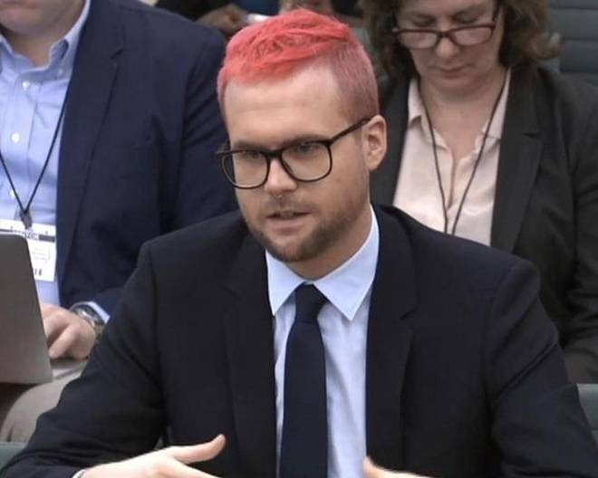
Who is Alexander Nix?
Asked whether the results swayed the referendum vote he insisted that was irrelevant. If someone was caught doping in the Olympics one lost one’s medal either way. “This is a breach of the law…this is cheating this is an irreversible change to the constitutional settlement of this country.”
Mr. Wylie’s testimony is the latest in a series of dramatic developments that brought together questions about Brexit, Cambridge Analytica, Facebook, and the election of U.S. President Donald Trump.
“Christopher Wylie was a part-time contractor who left in July 2014 and has no direct knowledge of our work or practices since that date,” Cambridge Analytica said on Tuesday, as Wylie gave testimony.
Breaking rules
Investigative work by the Observer newspaper, Channel 4 and The New York Times, with Shahmir Sanni, a member of the BeLeave pro-Brexit group, has alleged that Vote Leave may have broken the rules by using BeLeave as a front for spending above the allowed limit, purportedly giving the group £625,000 to funnel into Aggregate IQ.
After the referendum, senior figures within Vote Leave had attributed some of their success to the work of the Canadian firm. Vote Leave “pretended” to give BeLeave the money, which had “no control over it,” Mr. Sanni told the Observer over the weekend.
During his testimony, Mr. Wylie alleged that senior figures in Vote Leave had used BeLeave to “launder” money. Bindmans, a law firm, said there was sufficient evidence to suggest a criminal offence could have been committed by the campaign.
Class X Maths and Class XII Economics exams
On March 28, the board announced that Class X Maths and Class XII Economics exams would be reconducted.
A coaching institute owner is allegedly involved in the leak of Central Board of Secondary Education (CBSE) question papers of Class 10 Maths and Class 12 Economics, as per the initial findings of a Delhi Police investgation on Thursday.
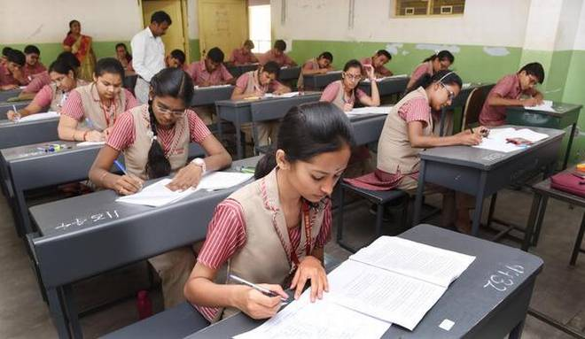
Crime Branch officials said that on March 23, the CBSE received by fax from an unknown source a complaint stating that Vicky, who runs the coaching institute in Rajendra Nagar, is involved in the leak of the question papers. The complaint also said two schools in the area were involved in the leak.
The complaint was forwarded to the CBSE regional office in New Delhi the next day, and the office sent a copy of the complaint to a police inspector via WhatsApp the same day.
Subsequently, on March 26, an unaddressed envelope containing four sheets of handwritten answers of the Economics exam held on the day was delivered to the CBSE academic unit at Rouse Avenue.
|